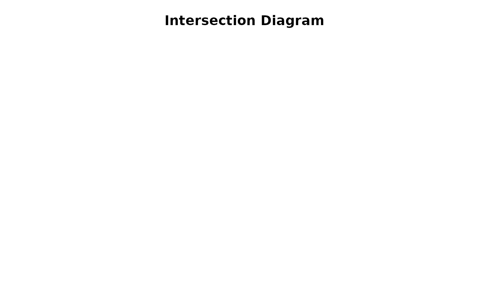

Enter a set intersection list
getIntersectList.RdEnter the information for a set intersection display.
Details
getIntersectList allows the user to manually enter the counts of set intersections rather than build this information from a matrix of data. It is probably most useful for producing an intersection diagram when the counts of the intersections are already known, or when the values are proportions rather than counts as in the example.
It is very helpful when there are large numbers of elements, as the makeIntersectList function runs very slowly.
Examples
# this example is from a haplotype mapping problem submitted by Mao Jianfeng
if (FALSE) { # \dontrun{
hapIntList<-
getIntersectList(3,xnames=c("hap.Pd","hap.Pt","hap.Py"))
# enter the data as follows:
# Number of elements in hap.Pd - 1: 27.586
# Number of elements in hap.Pt - 1: 20.689
# Number of elements in hap.Py - 1: 31.035
# Number of elements in hap.Pd-hap.Pt - 1: 10.345
# Number of elements in hap.Pd-hap.Py - 1: 10.345
# Number of elements in hap.Pt-hap.Py - 1: 0
# Number of elements in hap.Pd-hap.Pt-hap.Py - 1: 0
# Total number of elements - 1: 100
} # }
hapIntList<-structure(list(structure(c(27.586, 20.689, 31.035),
.Names = c("hap.Pd","hap.Pt","hap.Py")),
structure(c(10.345, 10.345, 0),
.Names = c("hap.Pd-hap.Pt","hap.Pd-hap.Py","hap.Pt-hap.Py")),
structure(0, .Names = "hap.Pd-hap.Pt-hap.Py"),100),
class = "intersectList")
intersectDiagram(hapIntList)
